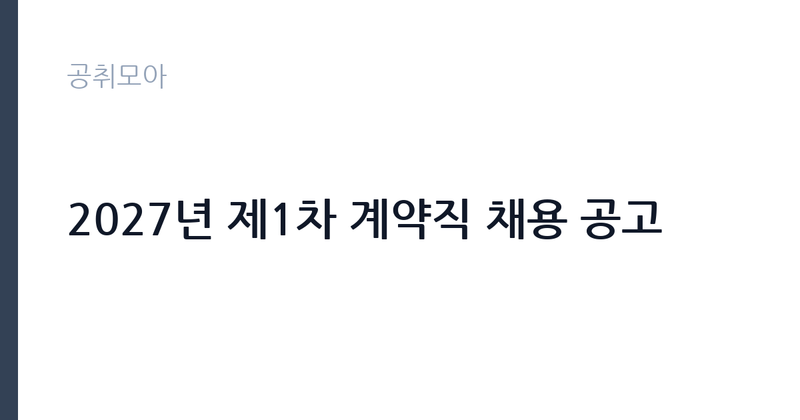

[공공기관] 2027년 제1차 계약직 채용 공고
한국산업단지공단 · 부산 · 마감 2026-11-16 (D-15) · 출처 잡알리오

한눈에 보는 모집 조건
| 기관 | 한국산업단지공단 |
|---|---|
| 공고명 | 2027년 제1차 계약직 채용 공고 |
| 고용형태 | 기간제 |
| 근무지 | 부산 |
| 게시일 | 2026-11-02 |
| 마감일 | 2026-11-16 (D-15) |
지원자격, 이렇게 읽으세요
- 공공기관 채용공시
- 세부 조건은 원문 공고문 확인
지원자격 자체는 넓습니다. 공단의 채용결격사유에 해당하지 않고, 2027년 1월 4일 채용예정일부터 근무할 수 있으며, 병역을 마쳤거나 면제받은 대한민국 국적자면 됩니다. 지원연령은 제한이 없지만 입사일 기준 만 60세 이상은 지원할 수 없습니다. 계약기간 만료 전에 만 60세에 도달하면 인사규정 제42조에 따라 계약기간 만료 전에 퇴직해야 한다는 조항도 함께 확인하십시오. 결격사유는 13개 항목으로 세분되어 있는데, 다른 공공기관에서 부정한 방법으로 채용된 사실이 적발되어 취소된 지 5년이 지나지 않은 경우도 포함됩니다. 공단 인턴 경력자는 우대 대상으로 명시되어 있습니다.
이 공고의 포인트
이 공고의 첫 번째 포인트는 전형 배점입니다. 서류전형은 자기소개서 40점, 경험기술서 60점으로 경험기술서 비중이 훨씬 큽니다. 면접은 자기소개 20점, 지원동기 20점, 전문성 및 경력 30점, 업무수행계획 30점으로 업무수행계획이 큰 비중을 차지합니다. 두 번째는 근무지가 네 곳으로 나뉜다는 점입니다. 대구 본사, 전남 영암, 부산, 충남 당진으로 지역이 전혀 다르므로 지원 시 근무지를 정확히 확인해야 합니다. 세 번째는 우대 대상의 폭입니다. 취업지원대상자, 장애인, 국민기초생활수급자, 한부모가족, 북한이탈주민, 다문화가족, 경력단절 여성, 자립준비청년, 공단 인턴까지 아홉 가지가 명시되어 있습니다.
전형은 어떻게 진행되나
1차 서류전형은 직무기술서와 자기소개서, 경험기술서를 바탕으로 자기소개서 40점, 경험기술서 60점을 평가해 5배수를 선발합니다. 2차 면접전형은 1배수를 선발하며 자기소개 20점, 지원동기 20점, 전문성 및 경력 30점, 업무수행계획 30점으로 100점을 구성합니다. 접수는 한국산업단지공단 채용 홈페이지(kicox.saramin.co.kr)에서 온라인으로만 받습니다. 공고문에는 면접 일정과 최종합격자 발표일이 날짜로 명시되어 있지 않아, 지원 후 채용 홈페이지 공지를 확인해야 합니다.
원문에서 확인한 전형 방식
□ 지원 자격 ㅇ 공단의 채용결격사유에 해당하지 않는 자(별첨1참조) ㅇ 채용예정일('27.1.4)부터 근무가 가능한 자 ㅇ 병역사항 : 병역필 또는 면제자 * 입사일 이전 전역(소집해제) 예정자인 경우 지원 가능 ㅇ 지원연령 : 제한 없음(단, 공단 규정에 따라 입사일 기준 만 60세 이상은 지원불가) * 계약기간 만료 전 만 60세에 도달하는 경우 인사규정 제42조에 따라 계약기간 만료 전 퇴직 ㅇ 대한민국 국적 소지자
이런 분께 추천해요
- 비서·행정 실무 경력이 있는 분. 본사 비서 직무는 임원 보좌와 일정 관리가 중심입니다.
- 지역 근무가 가능한 분. 전남 영암, 부산, 충남 당진, 대구 본사 가운데 한 곳에서 근무하게 됩니다.
- 경력단절 여성이나 자립준비청년, 공단 인턴 출신. 공고문이 우대 대상으로 명시하고 있습니다.
지원 전 체크리스트
- 지원하려는 근무지가 어디인지 확인했는가. 네 지역이 각각 별도 모집 단위입니다.
- 2027년 1월 4일부터 근무가 가능한가. 채용예정일부터 근무 가능한 자가 응시자격입니다.
- 입사일 기준 만 60세 미만인가. 계약기간 중 60세에 도달하면 계약 만료 전 퇴직 조항이 적용됩니다.
- 경험기술서를 충실히 작성했는가. 서류전형 100점 가운데 60점이 경험기술서입니다.
모집 일정과 제출 타이밍
접수는 2026년 11월 2일 월요일부터 11월 16일 월요일까지입니다. 한국산업단지공단 채용 홈페이지를 통한 온라인 접수만 인정됩니다. 채용예정일은 2027년 1월 4일이며, 계약기간은 육아휴직자의 복직 시점에 맞춰 정해집니다. 서류전형과 면접전형 일정, 최종합격자 발표일은 공고문에 날짜로 제시되지 않았으므로 접수 후 공단 채용 홈페이지 공지를 주기적으로 확인해야 합니다. 문의는 공단 인사 담당 부서로 하면 됩니다.
직무 이해하기: 공공기관
한국산업단지공단은 산업단지 조성과 운영, 입주기업 지원을 담당하는 준정부기관입니다. 이번 채용은 네 개 모집 단위로 나뉘고 성격이 조금씩 다릅니다. 본사 비서는 임원의 일정과 문서를 관리하고 내부 회의를 준비하는 업무입니다. 전남서부지사와 부산지역본부, 당진지사는 관할 산업단지의 입주기업 지원과 각종 사업 관리 업무를 맡습니다. 공통적으로 문서 작성과 예산 집행, 기업 상담 응대가 업무의 큰 부분을 차지합니다. 육아휴직 대체인력이므로 원 담당자의 업무를 인수인계받아 계약 기간 동안 수행하는 구조입니다.
자기소개서 작성 팁
서류전형에서 경험기술서가 60점, 자기소개서가 40점입니다. 분량 배분도 이 비율에 맞추십시오. 경험기술서에는 본인이 수행한 업무를 상황, 행동, 결과 순으로 정리하고, 처리 건수나 기간, 담당 범위를 숫자로 붙이십시오. 지원하는 근무지의 업무 성격을 미리 파악해 두면 경험을 연결하기 쉽습니다. 비서 직무라면 일정 관리와 문서 처리 경험을, 지사 근무라면 기업 상담이나 사업 관리 경험을 앞세우십시오. 자기소개서는 지원동기와 연결해 짧게 쓰되, 공단의 산업단지 지원 사업 가운데 한 가지를 구체적으로 언급하면 준비도가 드러납니다.
면접 준비 포인트
면접은 자기소개 20점, 지원동기 20점, 전문성 및 경력 30점, 업무수행계획 30점입니다. 업무수행계획이 30점이므로, 지원하는 근무지에서 1년간 무엇을 어떻게 할 것인지 구체적으로 준비해야 합니다. 예를 들어 당진지사라면 관할 산업단지 입주기업 지원 업무의 개선점을 한두 개 제시하는 식입니다. 전문성 및 경력 항목은 경험기술서와 연결되므로 같은 사례를 더 깊게 설명할 수 있도록 준비하십시오. 육아휴직 대체인력이라는 점을 이해하고 있다는 태도를 보이되, 단기 근무로 인식된다는 인상을 주지 않도록 주의하십시오.
급여·근무조건 읽는 법
공고문에는 이 직위의 임금이 구체적 금액으로 명시되어 있지 않아 원문 공고문 확인이 필요합니다. 참고로 알리오 2025년 결산 공시 기준 공공기관 전체 일반정규직 1인당 평균보수는 7,376만 9천원, 신입사원 평균초임은 4,031만 6천원입니다. 다만 이번 채용은 계약직 육아휴직 대체인력이라 정규직 공시값이 적용되지 않고, 공단의 계약직 임금 기준에 따라 정해집니다. 계약 기간과 월 급여, 수당 포함 여부, 계약 만료 시 퇴직금 지급 방식은 원문 공고문에서 확인하십시오. 평균보수액은 기본급에 고정수당과 성과상여금을 합산한 값이라 매달 받는 금액과 차이가 큽니다.
자주 묻는 질문
- 네 곳 중 한 곳만 지원할 수 있나요?
모집 단위가 본사 비서, 전남서부지사, 부산지역본부, 당진지사로 나뉘어 있습니다. 중복 지원 가능 여부와 선택 방법은 원문 공고문의 지원 안내를 확인해야 합니다. - 경력이 짧아도 지원할 수 있나요?
학력과 경력에 별도 제한은 없습니다. 다만 서류전형에서 경험기술서가 60점으로 가장 큰 비중을 차지하므로 관련 경험을 구체적으로 정리하는 것이 중요합니다. - 정규직으로 전환되나요?
이번 채용은 육아휴직 대체 계약직입니다. 공고문에 정규직 전환 조항은 안내되어 있지 않으므로, 계약 기간과 갱신 조건은 원문에서 확인하십시오.
함께 보면 좋은 공고
[공공기관] 대한적십자사 인천사할린동포복지회관 직원(요양보호사) 채용 공고 — 마감 2026-11-17[공공기관] 건설분야 기간제 근로자 채용공고 [HVDC건설본부] — 마감 2026-11-16[공공기관] 대한적십자사 인천사할린동포복지회관 직원(요양보호사) 채용 공고 — 마감 2026-11-17출처: 잡알리오 공개정보를 바탕으로 공취모아가 정리한 안내글입니다. 모집 조건·일정은 변경될 수 있으니 지원 전 반드시 원문 공고문을 확인하세요. 본 글은 정보 제공용이며 합격을 보장하지 않습니다.